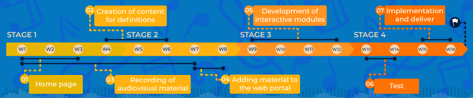

- Music is one of the intelligences: H.G.
- Is an Art, the expression of our souls.
- Rhythm is present everywhere, in our lives, his learning gives us advantages in multiple human activities.
How could we implement a free portal to support rhythmic musical learning?
- Expensive tools
- No accessible technology
- No training feedback without tutor
- Loud percusion instruments
- Boring methodology
Kids face these among other
problems when they are trying
to learn or practice their exercises.
There's no open platform where
you can practice your own rhythm
patterns, also the digital instruments
available are expensive, not easy to handle, and doesn't have option to program your patterns.
Tutors and their time are a limited resource, and the feedback they gives to the student is extremely important.
- No accessible technology
- No training feedback without tutor
- Loud percusion instruments
- Boring methodology
Kids face these among other
problems when they are trying
to learn or practice their exercises.
There's no open platform where
you can practice your own rhythm
patterns, also the digital instruments
available are expensive, not easy to handle, and doesn't have option to program your patterns.
Tutors and their time are a limited resource, and the feedback they gives to the student is extremely important.

presupuesto
objetivos


definitions
player
multipad